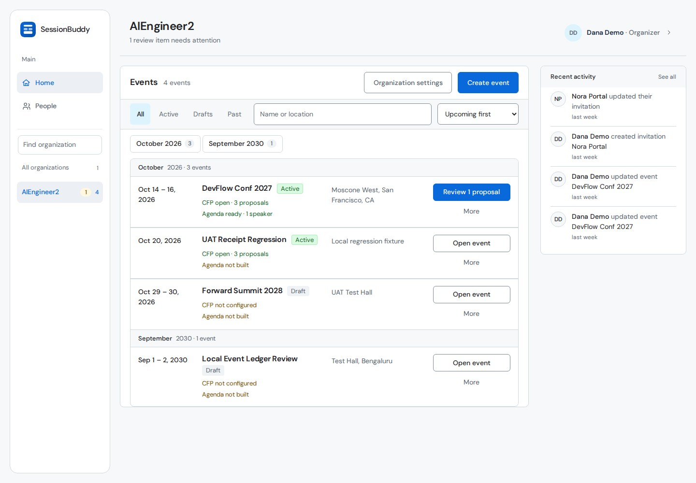
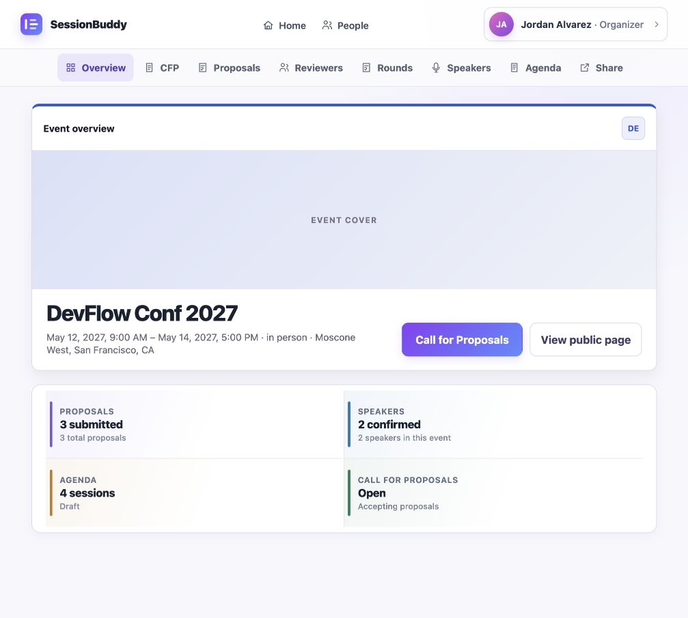
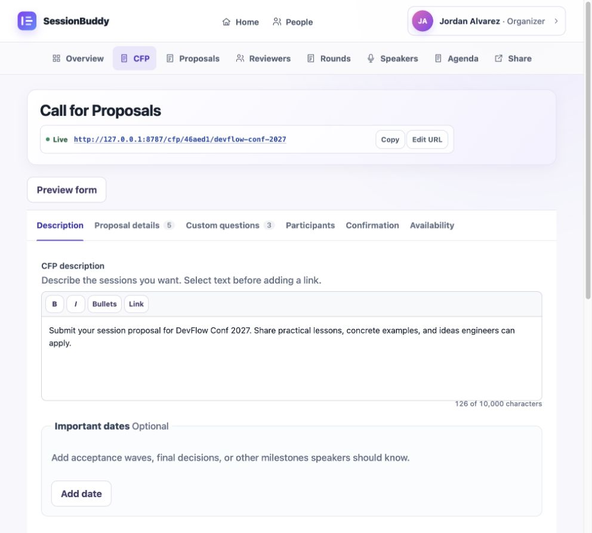
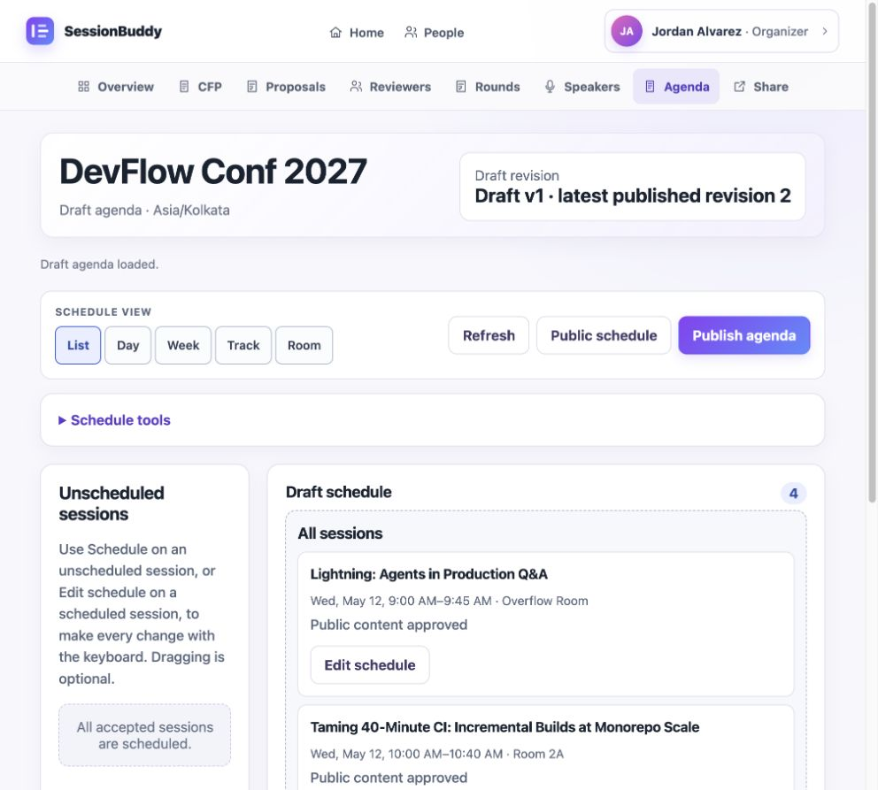
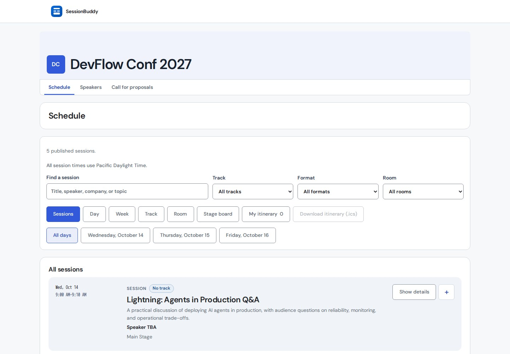

Build the event, publish the CFP, operate evaluation, onboard speakers, and publish the agenda.
Design draft · screenshot evidence pending
Three-role field guide
From a blank event
to a published program
Follow one conference through the hands of its organizer, speaker, and reviewer. Every task names the starting state, action, visible result, recovery path, and permission boundary.
Submit and maintain a proposal, respond to acceptance, and complete event onboarding.
Accept an invitation, disclose conflicts, score assigned work, and finalize a recommendation.
Design review edition: 18 August 2026 · Target revision 859bfbc · Not release evidence
Start here
One event. Three authenticated roles.
This guide uses DevFlow Conf 2027 as a continuous scenario. The organizer creates the call, Priya submits a proposal, Sam reviews it, and the organizer publishes the accepted session. Public pages appear only as proof that the authenticated work produced the intended result.
Publish CFP→Submit proposal→Review→Decide→Onboard→Publish agenda
Draft evidence boundaryThis edition demonstrates content structure and visual design only. Its retained screenshots are not a consistent frozen-fixture capture and must not be used as release evidence. The local Worker could not be restarted because Docker storage was full. A final PDF is intentionally withheld until every screenshot is recaptured against one verified revision and fixture.
Choose a path
- Shared foundations
- Organizer creates the path
- Speaker submits
- Reviewer evaluates
- Organizer decides
- Speaker onboards
- Organizer publishes
- Validate public output
- Permission boundaries
- Troubleshooting
Shared foundations
Use a password or a one-time email link. Invitation links establish the invited relationship; they are not ordinary share links.
A multi-role account sees one role-specific portal at a time. Changing navigation is not the same as receiving permission.
A public profile is opt-in. Without consent, the People directory must not link to an anonymous public profile.
Server authorityVisible controls are not authorization. Tenant scope and role permissions are enforced by the server. If a copied URL is outside the active role, return to the appropriate portal instead of trying to work around the restriction.
Organizer · Part 1
Create the path speakers and reviewers
will follow
Open the organization workspace
Orient- Open Home. Confirm the organization name at the top.
- Choose the current event from the event list. Archived events remain separated from active work.
- Use Settings only for organization identity and organizer membership; use the event row for event operations.
Expected resultThe event workspace opens with event-level navigation and status.
If it does not workIf Home redirects to account onboarding, complete the required identity fields. If the event is absent, verify organization membership rather than searching another tenant.

123- Organization identity
- Current event list
- Organization settings
Create and inspect the event
Organizer- Enter the event name, time zone, dates, attendance mode, and venue or virtual context.
- Add a public description and optional logo/cover artwork.
- Save, then inspect the Overview. Confirm the title, date, time zone, venue, and lifecycle state.
Expected resultThe Overview becomes the event’s launchpad for CFP, Proposals, Reviewers, Speakers, Agenda, and Share.
Permission boundaryOrganization ownership and event operation are related but distinct. Only the organization owner may transfer ownership.

123- Event identity
- Lifecycle navigation
- Program state
Build, preview, and publish the CFP
Critical path- Set call title, description, open/close times, limits, and confirmation copy.
- Configure session formats and add custom questions. Use groups when a choice—such as Workshop or Presentation—reveals a different set of questions.
- Mark only genuinely mandatory questions required. A hidden conditional question must not block submission while inactive.
- Preview the public form. Test each choice branch, required field, upload, and confirmation state.
- Publish and copy the stable public CFP URL.
Expected resultThe page reports that the call is live, and Preview shows the same conditional structure the speaker will receive.
If it does not workIf a hidden required field causes a 422 response, stop and report the form/server condition mismatch. Do not tell speakers to invent values for invisible controls.

123- Published URL
- Preview action
- Form sections
Speaker · Part 1
Submit once, then manage the proposal
in its own workspace
Create the proposal from the public CFP
Speaker- Read the call, dates, session formats, and submission window.
- Sign in or register with the proposal-owner email.
- Enter a title and save an early server draft. A title-only draft can be resumed.
- Complete the visible questions. When a choice reveals a group, complete only the active branch.
- Add permitted co-speakers and upload requested files. Wait for upload/scan completion.
- Review the full proposal and submit. Retain the receipt identity.
Expected resultThe proposal is Submitted, appears as one compact row in the Speaker portal, and opens at its own proposal URL.
If it does not workIf the browser loses a response, reload the proposal workspace before retrying; unchanged idempotent retries should not create duplicates. If scanning is explicitly disabled locally, no scanner request should be attempted.
Creation boundaryThe public CFP is the only speaker creation surface. The Speaker portal lists existing proposals; it is not a second “new proposal” form.
Use the Speaker portal as a dashboard
Read the hierarchy- Find the event card and its proposal row. The status belongs to the proposal, not the speaker’s participation.
- Open the proposal row to view or edit the exact proposal when its state and the CFP allow editing.
- Use Needs attention for assigned onboarding work, Event updates for delivered communications, and Resources/Files for event materials and uploads.
Expected resultThe portal remains compact; the full proposal form appears only in the dedicated proposal workspace.
Screenshot intentionally withheld. The retained Speaker portal capture belonged to a different event and could not truthfully illustrate this DevFlow scenario. Recapture this state with the frozen fixture before final publication.
Reviewer
Evaluate assigned proposals without taking
the organizer’s decision
Accept the invitation and open Reviews
Reviewer- Open the one-time invitation link and confirm the invitation.
- Complete required identity fields and optional password setup.
- If the account has several roles, activate Reviewer.
- Open Reviews and choose an assignment in the active round.
If it does not workIf the link has expired or was already used, ask the organizer to resend it. A resend rotates the one-time URL. If sign-in lands on
/admin, switch to Reviewer or open /reviews; do not request organizer access.Blind-review boundaryProtected speaker identity must remain hidden in a blind round. Do not infer identity or score reputation.
Save, check, and finalize the scorecard
Immutable finish- Read the proposal and configured answers. If a real conflict exists, declare it instead of scoring.
- Complete every required numeric, dropdown, and text criterion. Weights affect the numeric mean; narrative criteria support judgment.
- Choose a recommendation and write a concise internal comment tied to the criteria.
- Save a draft when incomplete. Return and verify restoration.
- Choose Finalize only after the completeness check. Finalization is immutable.
Expected resultThe assignment displays Finalized, required inputs are no longer editable, and the organizer sees review progress.
Permission boundaryA reviewer recommends. A reviewer cannot accept/reject the proposal, edit it, browse unrelated proposals, or operate event administration.
Screenshots intentionally withheld. The retained scorecard/finalized captures did not prove the named DevFlow assignment consistently. Capture the draft and finalized states from the same frozen reviewer fixture before final publication.
Organizer · Part 2
Turn review evidence into a decision
Monitor the round and decide
Organizer only- Inspect reviewer completion, conflicts, numeric summary, recommendations, and individual comments.
- Send reminders or reassign declared conflicts while the round allows it.
- Close the round after expected work is complete.
- Enter the internal decision reason and choose Accept or Reject.
- Verify the proposal decision and resulting accepted-session/onboarding state.
Expected resultAcceptance creates or restores the accepted session and only the onboarding work still needed. Rejection preserves completed review history.
If reviews are incompleteThe organizer may use the explicit override only with the required audited reason. Do not confuse the ability to override with a normal review workflow.
Correction boundaryFinal decisions are not ordinary editable fields. A change requires the explicit audited correction workflow with original outcome, corrected outcome, reason, actor, and time.
Screenshot intentionally withheld. The retained decision capture used proposals outside this scenario. Capture the DevFlow round, reviewer progress, and decision reveal from the frozen fixture before final publication.
Speaker · Part 2
Confirm participation and complete only
the work still needed
Respond to acceptance and onboarding
Speaker- Open the accepted event in the Speaker portal.
- Confirm or decline participation when that control is offered. This status is separate from Accepted/Rejected.
- Complete outstanding profile or biography tasks. Existing valid data should not trigger a false onboarding gate.
- Upload the headshot, presentation, or custom task attachment requested by the organizer.
- Wait for a clean scan state and verify the completed task. Read event updates and resources separately.
Expected resultThe event roster shows the correct participation status, completed tasks leave Needs attention, and clean assets become available to authorized organizers.
If an upload stallsDo not repeatedly re-upload a successfully staged file. Reload and verify its staged/scan state. Production stays fail-closed; a deliberately scanner-free local environment should skip the scanner call.
Privacy boundaryHeadshots and files remain private until their validation/scan workflow succeeds. Public profile sharing remains a separate opt-in.
Operate the speaker roster
Organizer counterpart- Invite a speaker by normalized email or import CSV.
- Review email matches and duplicate/same-name warnings before confirming an import.
- Treat an unaccepted invitation as a pending event relationship, not a fully provisioned speaker permission.
- Update event-scoped participation and inspect tasks, assets, versions, comments, messages, and reminders.
Expected resultPending, Confirmed, and Declined participation is visible independently from proposal decisions.
Organizer · Part 3
Schedule accepted work and publish a revision
Build the draft agenda
Organizer- Define rooms, tracks, and the event’s scheduling grid.
- Add accepted sessions or an authorized manual session to the draft.
- Place each session in a time and room. Inspect speaker, room, and timing conflicts.
- Save the draft and verify its revision/status before publishing.
Expected resultThe draft contains the intended session exactly once, with valid timing and no unresolved conflicts.
If the public page is staleConfirm that a new revision was actually published, then reload with normal cache semantics. Editing the draft alone must not silently alter the published program.

123- Draft and published revision
- Schedule views
- Publish action
Publish and validate the attendee result
Public proof- Publish the selected agenda revision.
- Open the public schedule in an anonymous context.
- Search for the accepted session; filter by track, format, room, and day.
- Open session details, add it to the browser-local itinerary, reload, and verify retention.
- Inspect the public speaker directory/profile only where profile sharing is enabled.
Expected resultThe public page identifies the published revision and shows the session, speaker, schedule, and permitted public profile data.
Public boundaryPublic pages must never expose private profile data, invitation links, review content, internal decision reasons, private assets, or organizer-only controls.

123- Published revision
- Search and filters
- Itinerary controls
Reference
Permission and status boundaries
- Organizer: operates organizations/events, publishes CFPs, configures evaluation, makes decisions, manages speakers, and publishes schedules. The organizer may view—but not impersonate a speaker or reviewer’s editable work.
- Speaker: creates a proposal only from the public CFP, edits owned work while allowed, manages permitted participants, responds to participation, and completes onboarding. The speaker cannot review or decide.
- Reviewer: sees only authorized assignments, declares conflicts, saves review drafts, and finalizes recommendations. The reviewer cannot accept/reject proposals.
- Proposal decision: Draft, Submitted, Accepted, Rejected, or Withdrawn.
- Participation: Awaiting confirmation, Confirmed, or Declined. It does not rewrite proposal history.
- Review: Draft or Finalized. Finalized reviews are immutable.
- Agenda: draft revisions may change; only the published revision is publicly authoritative.
- Public profile: off by default and linkable only after explicit sharing consent.
Troubleshooting by symptom
“This page is not available for your active role.”
Return to the account role switcher and activate the role that legitimately owns the destination. If the relationship is missing, an organizer must invite/assign it; changing the URL is not a fix.
A one-time email link reaches 403
Request a new link and use the same origin that created the request. Links are single-use and time-bound; resending rotates the token. Never paste a live token into support logs.
A hidden CFP question blocks submission
Record the source question, selected value, and hidden target label. This is a form/server parity defect, not a speaker mistake. The organizer should unpublish or correct the condition before asking for another submission.
An upload is staged but the next file fails
Reload before retrying. Confirm the first file’s stored reference/scan state so it is not uploaded and scanned twice.
The published schedule does not change
Check the published revision, not only the current draft. Confirm publication succeeded, then verify the public page reports the expected revision.
Historically risky workflows
Exact checks before calling the task complete
These modules turn previously observed failure classes into explicit reader checks. They are requirements, not optional tips.
Active role and post-login destination
- Before sign-in, note the requested destination.
- After authentication, confirm the active persona matches that destination: Organizer →
/admin, Reviewer →/reviews, Speaker →/speaker. - If the server returns 403, switch only to a role the account truly holds; never infer authorization from a visible link.
- For an event-scoped organizer, verify that only the granted event opens and organization-wide surfaces remain unavailable.
Evidence: the expected portal loads; a cross-persona route receives 403 before a portal shell is served.
Magic links and invitations
- Open the newest link on the same HTTPS origin that issued it.
- Confirm the token fragment is removed from browser history before redemption.
- Complete the explicit confirmation POST once.
- On expiry/use, request resend; verify the older link no longer works and invitation-list APIs do not expose either bearer URL.
Evidence: one session is created, the intended role/relationship exists, and no token appears in logs, copied URLs, or API lists.
Profile onboarding and public consent
- Confirm prefilled first/last name values are treated as real saved profile data.
- Save profile and require visible success confirmation.
- Enable public sharing explicitly; verify the People row becomes a link and the anonymous profile/headshot opens.
- Disable sharing; verify both links fail immediately while private account data remains.
Evidence: onboarding does not loop, canonical profile data is saved once, and public access follows the consent bit.
Conditional CFP parity
- For every choice, checkbox, and multiselect source, record the configured expected value.
- Preview each equals/not-equals branch and list active target questions.
- Submit the same branch and require server acceptance with exactly those targets.
- Clear the source and confirm hidden file/image answers are neither required nor validated.
Evidence: client visibility and server inactive_targets agree for canonical and custom source fields.
Draft resume and retry identity
- Create a title-only server draft; record its proposal ID.
- Reload and confirm the title and conditional answers restore.
- Simulate a lost response, then retry unchanged content; confirm the same idempotency key and one proposal.
- Edit the payload, retry, and confirm the key rotates without duplicating the proposal.
Evidence: one proposal ID, versioned draft history, and stable retry behavior.
Partial upload and scanner behavior
- Stage file one successfully, then force file two to fail.
- Reload and confirm file one’s staged reference persists; it must not transfer or scan again.
- Resume file two and wait for terminal scan state before submission/current-version use.
- With scanner explicitly disabled locally, verify no scanner request occurs. In production/unknown environments, require fail-closed behavior.
Evidence: one object/version per successful upload, no public/private grant before clean state, and an actionable retry message.
Round membership, blind fields, and conflicts
- Add proposals and reviewers to a draft round and inspect balanced assignments.
- Open as Reviewer and verify protected identity fields are absent—not merely CSS-hidden.
- Declare a conflict; verify the assignment loses proposal access and the organizer can reassign.
- Finalize a replacement review, then verify it is immutable.
Evidence: assignment is the sole authorization fact, conflict revokes visibility, and final review history remains.
Decision correction, not ordinary editing
- Record the original final decision and accepted-session state.
- Open the explicit correction workflow, provide corrected outcome and reason.
- Confirm actor/time/original/corrected values in audit history.
- Verify correction to acceptance restores the session; correction to rejection withdraws without deleting content or final reviews.
Evidence: immutable original history plus one explicit correction record.
Proposal decision versus participation
- Accept a proposal and verify the proposal remains Accepted.
- Set participation to Awaiting confirmation, Confirmed, then Declined.
- Verify each change affects the event speaker record only and does not rewrite the proposal decision.
Evidence: two independently visible statuses with separate audit facts.
CSV identity reconciliation
- Normalize email case and surrounding whitespace before matching.
- Show exact-email matches as existing people.
- Require review for same-name/different-email rows; do not silently merge or create.
- Confirm only reviewed rows, up to the 500-row limit.
Evidence: import summary lists matched, new, warning, and rejected counts before mutation.
Pending invitees in roster and schedule
- Invite a speaker and verify the roster shows Pending without granting Speaker permissions.
- Add the pending invitee to an authorized manual session.
- Before publish, require a confirmation naming sessions with pending invitees.
- Verify public output says Speaker TBA until acceptance; after acceptance, verify transactional linkage to the real event speaker.
Evidence: no premature persona grant or public identity disclosure.
Messages, reminders, and delivery history
- Send to the visible intended recipient set and confirm invited recipients are explicitly labelled.
- Verify message history excludes authentication mail and exposes category/status filters.
- Expand delivery detail without exposing credentials or bearer links.
- For transient failure, verify bounded retry/recovery; never requeue a permanent rejection through recovery.
Evidence: one domain message, bounded delivery attempts, and safe status history.
Coverage contract
Disposition of the implemented
three-role surface
The machine-readable source is coverage.json. No implemented capability in the canonical product-status categories is silently omitted:
Platform and administration
Tutorial: authentication, persona-aware entry, organization/event workspace, event creation.
Risk module: active-role redirects, invitations, profile consent.
Reference/operator: People search, profile links/headshots, exact grants and ownership transfer, Engine Room, activity projections, OpenAPI reference.
CFP and proposals
Tutorial: form builder, publication controls, public submission, dedicated proposal workspace.
Risk module: conditional parity, server drafts, idempotent retries, staged uploads.
Reference: participants, duplicate-title warning, receipt identity, withdrawal, limits, important dates, confirmation copy.
Evaluation
Tutorial: rounds, scorecards, reviewer finalization, organizer decisions.
Risk module: blind field removal, conflicts/reassignment, direct override, immutable corrections.
Reference: draft reopen/edit, ordered round ledger, reminders, notification copy.
Speaker operations
Tutorial: multi-event portal, participation, tasks, resources, assets, organizer roster.
Risk module: CSV reconciliation, pending invitees, upload/scan/version behavior, messages/reminders.
Reference: private notes, content history/restore, comments/replies, audited ZIP, gallery/profile publication.
Scheduling
Tutorial: rooms/tracks, conflicts, atomic edits, revision publication, public views and itinerary.
Risk module: pending invitees/TBA and publication revision checks.
Reference: manual sessions, labels/ownership, embeds, calendar invitations, Sessionboard-compatible feed.
Maintainer-only
Fresh baseline recreation, development reset, release gate, Cloudflare packaging, observability budgets, queues/workflows, secrets, backups, benchmarks, and Lighthouse are release/operator documentation—not Organizer, Speaker, or Reviewer tutorial tasks.
Keep this guide current
Before updating screenshots or claims, freeze the Git revision, baseline schema, fixture/checkpoint, browser viewport, and capture date. Update coverage.json and screenshots.json, run structural verification, render every PDF page, and complete a fresh-reader test for all three roles.